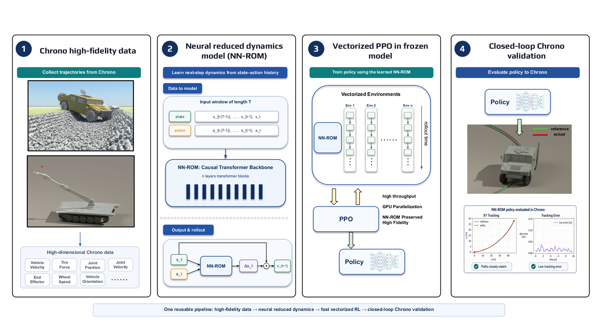
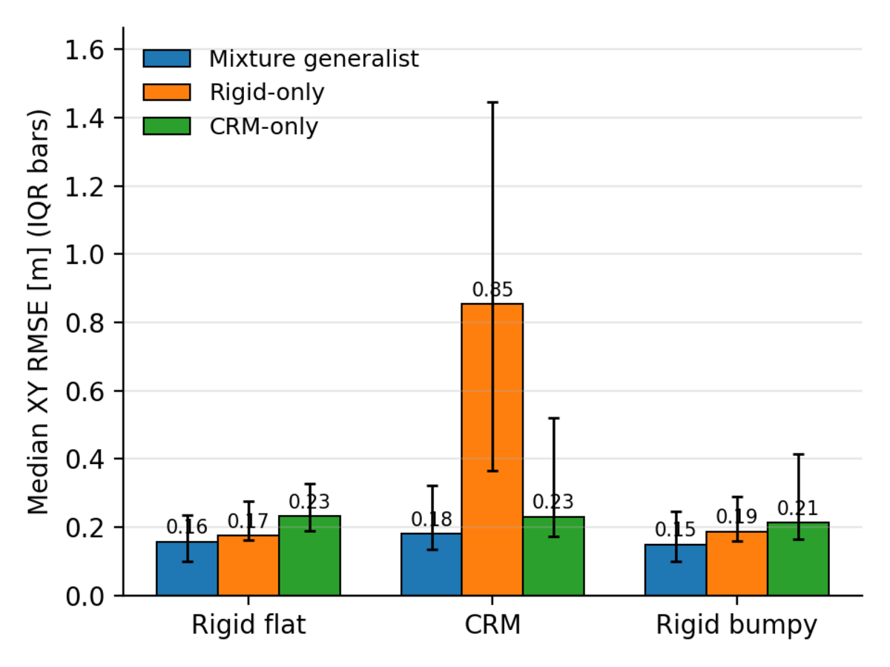
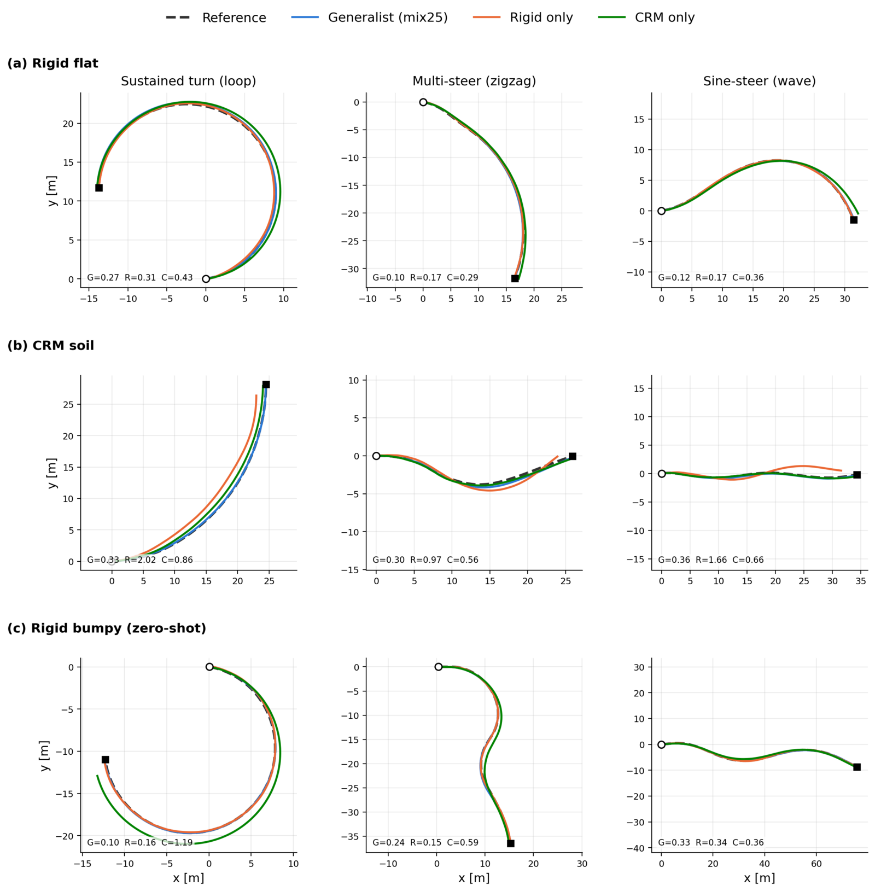
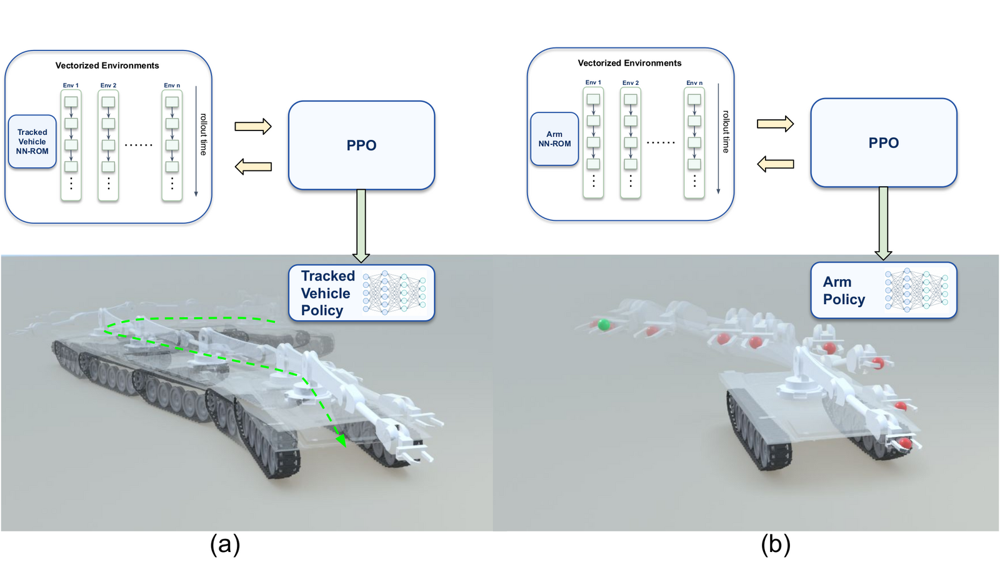

High-fidelity simulators like Project Chrono give you the physics to evaluate a controller, but not the throughput to find one. We distill Chrono into a task-specific neural reduced dynamics model (NN-ROM), train the policy entirely inside the frozen model, and send it back to Chrono for closed-loop validation. The question the paper answers is not how to compress state, but what a learned model should keep, receive, reconstruct, and omit so that it is both fast and useful for control.

Study Case I — one policy, three terrains
Nine closed-loop Chrono rollouts. Three tracking policies (columns), identical in every way except the frozen dynamics model they were trained inside, on three terrains (rows). Green is the reference, red the path actually driven — where you see only green, the vehicle is still on the line.
Rigid flat
A held-out reference from the rigid validation set.
CRM soil
Deformable terrain — the wheels sink and slip, and the rigid-only policy overshoots every turn.
Rigid bumpy out of distribution
No bumpy data enters training, checkpoint selection, normalization or reward tuning, and bumpy carries the same rigid context code as flat.
Each clip is one representative held-out reference for that terrain, rendered in Blender from the Chrono rollout; the quoted medians are over all 20 held-out references, so an individual clip can run against its policy's median. Clips loop — replay row restarts three in sync.
The generalist wins on every terrain — including the one it never saw
Closed-loop Chrono XY RMSE over 20 held-out references per terrain, all 20/20 rollouts completing. The mixture generalist takes the lowest median and mean in all three regimes: it beats the rigid-only specialist on rigid ground and the CRM-only specialist on CRM soil, on their own home terrain. Bumpy is the out-of-distribution case — the policy never previews the height profile, so closed-loop tracking there is the honest measure of whether the conditioned abstraction generalizes or memorizes.

| Terrain | Policy | Median | Mean |
|---|---|---|---|
| Rigid flat | Generalist | 0.157 | 0.184 |
| Rigid-only | 0.174 | 0.219 | |
| CRM-only | 0.232 | 0.259 | |
| CRM soil | Generalist | 0.180 | 0.249 |
| Rigid-only | 0.854 | 1.000 | |
| CRM-only | 0.231 | 0.361 | |
| Rigid bumpy† | Generalist | 0.149 | 0.229 |
| Rigid-only | 0.187 | 0.238 | |
| CRM-only | 0.213 | 0.418 |

Why context, not just capacity
The same reduced state and action evolve differently on rigid ground than on deformable soil, so the reduced dynamics are ambiguous without a regime label. A two-class one-hot code appended to each input token resolves it. Removing that code barely moves one-step loss — but more than doubles open-loop rollout error on rigid terrain, 3.73% → 8.26%. History alone does not preserve the rigid/CRM distinction over a long rollout.
Study Case II — same pipeline, two very different abstractions
One M113 tracked platform with a front-mounted 4-DOF arm, driven by two independent tasks. The base keeps a 3-D planar state [vx, vy, r] and integrates its pose outside the network. The arm keeps an 8-D joint state [q, q̇], with the end-effector recovered by forward kinematics rather than learned as a channel. Dimension is a consequence of the dominant physics, not the design target.

High fidelity supplies the physics to judge a controller, not the throughput to find one
Real-time factor (RTF) is simulated seconds advanced per wall-clock second; RTF = 1 is real time. Cost is normalized to each case's own NN-ROM, so it reads directly as how many times more wall-clock time the high-fidelity scene spends per simulated second than the surrogate that replaces it.
| Configuration | Δt | Steps/s | RTF | Cost |
|---|---|---|---|---|
| HMMWV — rigid flat | 2.0 ms | 3,657 | 7.31× | 239× |
| HMMWV — bumpy rigid | 2.0 ms | 3,324 | 6.65× | 263× |
| HMMWV — CRM soil | 0.5 ms | 304 | 0.152× | 11,500× |
| HMMWV — NN-ROM (L8)‡ | 10 ms | 175,000 | 1,750× | 1× |
Study Case I. The Chrono rows share one HMMWV_Full configuration and differ only in the tire–terrain contact model.
| Configuration | Δt | Steps/s | RTF | Cost |
|---|---|---|---|---|
| M113 tracked + arm — rigid | 0.5 ms | 558 | 0.279× | 58,400× / 8,300× |
| Tracked base — NN-ROM‡ | 20 ms | 815,000 | 16,300× | 1× |
| Arm — NN-ROM‡ | 20 ms | 116,000 | 2,320× | 1× |
Study Case II. One Chrono scene serves both control modes, so its Cost cell gives the ratio over the drive- / reach-mode NN-ROM. The comparison is not symmetric: Chrono simulates the full coupled vehicle-plus-arm system, each surrogate only the subsystem its mode controls.
‡ NN-ROM rows are aggregate batched-GPU figures — dynamics forward passes per second summed across the 2,048–4,096 parallel rollouts used during PPO — not single-stream processes like the Chrono rows, which are one process on one Intel 14900KF.
What the margin actually buys
CRM is the dominant Chrono cost, and the reason is the terrain rather than the vehicle: ~14.1M SPH particles, ~10.8M boundary markers, and a 4× smaller step. A 15 s episode costs ~100 s of wall clock. PPO consumes thousands of parallel rollouts over hundreds of iterations, so at that rate the search is simply not affordable.
A single converged run understates the point. The expensive part of applying RL is not that run but the design loop around it — shaping the reward and tuning the optimizer, each adjustment validated only by training again. Both Study Case II policies needed exactly that: spin and drive-against-brake penalties for the base; terminal bonus, action regularization, clearance observation and command shield for the arm. The effective cost of a policy is one run times the number of design iterations, so a run finishing in 10 minutes (base) or 57 minutes (arm) instead of the orders of magnitude implied above is what keeps that loop interactive — more reward and hyperparameter iterations per day, which is what ultimately yields a working policy.
What makes an abstraction the right one
Follow the dominant physics
The HMMWV needs tire normal loads and wheel speeds because tire–terrain interaction decides whether it holds a line. The base needs three planar velocities. The arm needs joint positions and rates. Different in kind, not just in count.
Don't learn what you can derive
Global pose is integrated from predicted velocities; the end-effector is FK(q); contact clearance is geometric. Reduction discards redundancy, not fidelity.
Add context only where ambiguous
A two-class terrain code where rigid and deformable dynamics diverge — nothing more. One backbone then shares what the regimes have in common.
Judge by transfer, not by loss
One-step error is necessary and insufficient; a policy can farm reward from a surrogate's mistakes. Closed-loop Chrono is the exam.
BibTeX
@article{zhang2026abstraction,
title = {Learning the Right Abstraction: Neural Reduced Dynamics for
Complex Robot Control},
author = {Zhang, Harry and Negrut, Dan},
journal = {Preprint},
year = {2026}
}